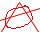

Petge de plombEn ce jour de Mardi 11 janvier 1900 euh 2000 'scusez moi y a mon cerveau qui a grille le 31 au soir. Ouais bon j'disais en ce dur et froid jour de Mardi 11 janvier 2000 oui c vrai j'en rajoute mais j'fais c'que j'veux c mon article d'abord et pas le votre NAH !! bon j'vais arreter la deconne. Il etait environ 21H30 quand les flammes ont surgit a mes yeux (vous allez comprendre par la suite, j'vais vous racontez mon histoire et on va en causer apres). Bon j'avais une vieille chaine qui trainait par la , alors comme j'avais rien a foutre j'me suis dis et pour koi j'retirerais pas les aimants des baffes apres tout ca peut servire en cours ;) J'commence par enlever les aimants tranquillement et pis dans ma lancee j'me suis attaque directement a la chaine (ben ouais la pauvre elle avait plus de 10 ans alors elle commencait a etre malade c comme les chiens les chaines faut multiplier l'age par 7) bon alors j'm'attaque a la chaine parce que j'voulais des fils electriques, j'vous dis tout de suite qui m'ont pas plu , ils etaient trop fins :( mais ouais parce qu'y a un mais, alors mais y avait un gros cable mais un tres gros cable et c koi ce gros cable ? Ben c la prise bon j'demonte tout, j'nique le plastoc qui me faisait chier et pis j'recupere la prise. C la que ca commence a etre drole :)) allez fini les explications on va faire le boulot maintenant . Bon vous allez me dire j'en fais koi de la prise ? j'me fouette avec ? j'vais voir des Sado-Maso ? j'me la fous dans le c*l ? Non, vous faites rien de tout cela, vous la rebranche le plus simplement du monde et pis vous prenez une pile (voir plus bas). Normalement votre prise doit y avoir 2 fils a l'interieur si y en a pas , chercher bien y en a 2 un + et un - Alors, vous faites un contact et pis y a des eclairs bleus qui apparaissent mais y aussi le fusible qui apprecient pas et qui grille . Inferno of Dante
|